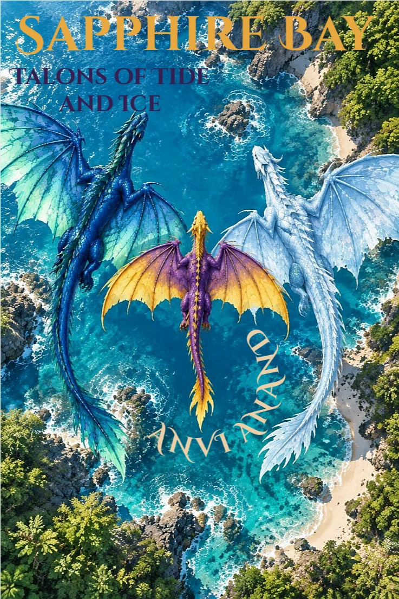

A deep sea blue dragon stepped out from behind a rock. “We need to do something,” he said. “The Nightlets are stealing more healing clams than ever before. They are clearly preparing for war, and if they are, we will need them more than ever!” Another dragon, this time sea green, swooped down. She responded, “ I have seen this in the future. But it is the Water Dragons and Ice Dragons alone who can save this. We Star Dragons have done our part. All we can do to help will be to send a prophecy. She will come to us soon and we will be ready.”